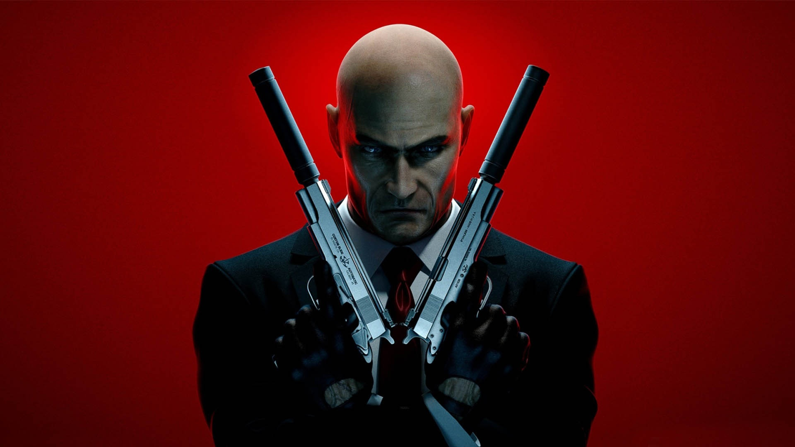

Первоначально планировалось, что вести разработку новой игры серии будет Square Enix Montreal, однако 17 июня 2013 года стало известно, что за проект возьмётся основательница серии IO Interactive, в связи с чем была произведена реорганизация студии, в ходе которой половина сотрудников была временно уволена, а все проекты студии, не связанные с Hitman, заморожены.
16 января 2014 года IO Interactive поделилась с фанатами концепцией будущей игры. Планировалось, что миссии новой игры будут менее линейными и с большими открытыми картами. Было решено отказаться от концепции контрольных точек (наличие которых критиковалось в Hitman: Absolution). Было заявлено, что режим контрактов снова вернётся в серию.
Официальный анонс игры состоялся 15 июня 2015 года на конференции Sony в рамках выставки E3 2015. Также стало известно, что бета-версия игры станет эксклюзивом консоли PlayStation 4. На следующий день, 16 июня, был показан игровой процесс. Также было объявлено, что протагониста игровой серии 47-го будет снова озвучивать Дэвид Бэйтсон.
28 августа на выставке PAX Prime компания Square Enix и студия IO Interactive опубликовали первое видео, в котором демонстрируется прохождение одной из миссий стелс-шутера Hitman. Разработчики заявили, что возвращаются к классической схеме — перед каждой вылазкой проводится инструктаж, где игрок выбирает необходимое оружие и оборудование. Это может быть снайперская винтовка, пистолет с глушителем, отмычка, взрывчатка, яд или даже катана — окончательное решение остается за игроком.
В феврале 2016 года было запущено закрытое бета-тестирование игры, доступное для пользователей, оформивших предзаказ игры. В бета-версии были доступны две миссии из пролога, соединенные сюжетной аркой, описывающей найм и испытание Сорок Седьмого агентством ICA. Помимо главного героя в бета-версии также появляется его связной Диана Бернвуд.
С момента выхода игра использовала антипиратскую защиту Denuvo, однако с 20 июня 2017 года вместе с очередным обновлением разработчиком защита была удалена. Одновременно с этим студия выпустила первые две миссии пролога в качестве бесплатного деморежима игры.